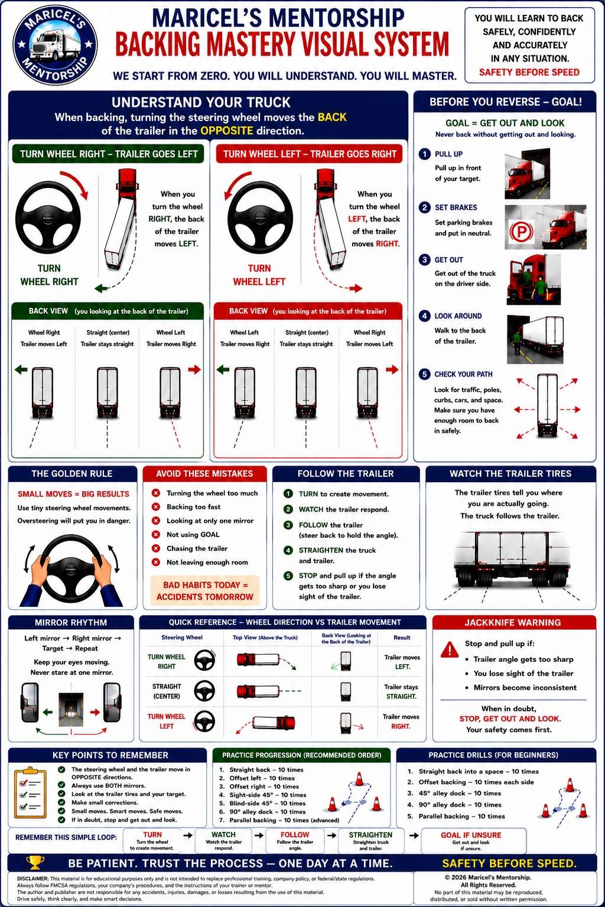

Maricel’s Mentorship: Backing Mastery Visual System
A study material shared by Coach Maricel with Maricel CDL Success Hub members.
On a phone, open the original image to pinch and zoom. Read the clarification above before using the poster.

Text study notes & learning reference
Study the trailer’s response, use small inputs and check both mirrors. Inspect the intended path, including the sides and overhead space. When unsure, stop and secure the vehicle before getting out to check. Plan any repositioning after checking the space; do not move forward just because backing has become uncertain.
Use qualified instruction and your company’s procedures. Suggested repetition counts on the poster are practice ideas, not evidence of readiness or official CDL testing requirements.
Reference for the clarification above: Oregon DMV Commercial Driver Manual, section 6.1.7 — Backing with a Trailer. Disclaimer & Source Credits.